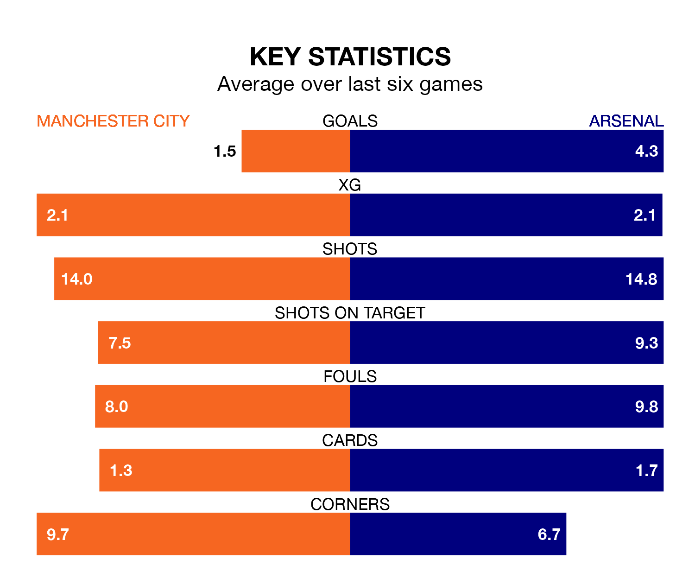

Two of the Premier League's top sides face each other at the Etihad Stadium in Sunday's kick-off, when third-placed Manchester City host table-topping Arsenal.
City have picked up 19 wins and six draws from 28 games so far this season, and sit one point below the visitors going into the 4.30pm match.
The Gunners, meanwhile, have won 20 and drawn four, picking up 64 points.
With 70 goals in 28 games so far this season, Arsenal are the league's highest scorers with 2.5 goals per game. And they are conceding fewer than average, letting in 24 goals at a rate of 0.9 per game.
City are also above average scorers, with 2.2 goals per game, compared to a league average of 1.6. They have conceded 1.0 goal per game.
The Citizens are in good form in the Premier League, with four wins and two draws from their last six games.
But with six wins and no losses over that period, the Gunners's form is even better – they have taken 18 points from 18, compared to the home side's 14.
In Erling Haaland, City have the league's most on-form striker so far this season. He has notched 18 goals in 23 appearances.
His goal rate of one every 107 minutes is quicker than that of Bukayo Saka, the visitors' top scorer with a goal every 175 minutes, and a total of 13 goals in 27 games.
In the last 10 years, City and Arsenal have played each other on 26 occasions. City won 16 of them, Arsenal six, and they drew four times.
On average, the Citizens scored 2.0 goals and the Gunners 1.0 in those matches.
Their last meeting was on October 8, when Arsenal won 1-0 at home.
City's last match was on March 10, a 1-1 draw against Liverpool, with John Stones getting the goal for the Citizens.
Arsenal beat Brentford 2-1 last time out, on March 9, with Declan Rice and Kai Havertz on the scoresheet.
Updated: 12:16 (UTC), 25/03/24